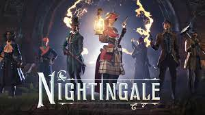

LATEST NEWS
- Anunciado Pokémon Pocket, el juego gacha de cartas virtuales con el que coleccionar y combatir
- Anunciado Leyendas Pokémon Z-A, el nuevo juego de la saga que nos llevará al futuro
- Se confirma el primer juego de PS Plus de marzo 2024 por adelantado, y es uno que los fans llevan pidiendo
- PlayStation anuncia el cierre de London Studio, creadores de Blood & Truth y Eyepet
- Lo + Top: las noticias de videojuegos más importantes de la semana (19-25 de febrero)
- El tráiler del DLC de Elden Ring explicado: estos son todos los secretos que esconde
- Así es la nueva edición coleccionista de Elden Ring: precio, contenido y fecha de lanzamiento
- ¡Pokémon Presents a la vista! El próximo 27 de febrero, Game Freak mostrará lo que tiene entre manos para 2024
- Lo + Top: las noticias de videojuegos más importantes de la semana (12-18 de febrero)
- La sucesora de Xbox Series será 'el mayor salto técnico' de la historia... ¿y habrá portátil?
- Xbox confirma el que fue un secreto a voces, y hasta cuatro juegos se van a otras plataformas
| juego |
imagen |
| Nightingale |
 |
| Call of Duty |
 |
| Titan fall 3 |
 |
- EA Sports FC 24: filtrados el 2º equipo de Héroes del Fantasy FC, el nuevo Pundit Picks y algunos IFs
- Impresiones de Nightingale: Un survival diferente en 2024 con mucho por recorrer
- El nuevo juego de Respawn no sería Titanfall 3, pero sí está ambientado en el universo de la saga

- Así es el nuevo logo de 'Call of Duty Black Ops' que ha sido filtrado en una página web

- Hogwarts Legacy 2 podría estar en desarrollo y usaría Unreal Engine 5 según esta oferta de empleo

- Pese a las últimas cancelaciones de Sony puedes estar tranquilo, el multijugador de Horizon sigue adelante
- Los jugadores de Modern Warfare 3 y Warzone recibirán una recompensa poco convencional tras los serios problemas en los servidores
- He visto cuál podría ser el nombre de Persona 4 Remake y ahora me parecería absurdo que Atlus no lo usase
- Se retira una de las leyendas de Elden Ring, adiós al famoso jugador 'Let Me Solo Her'
- Ubisoft desvela nuevos detalles sobre Assassin's Creed Infinity: ¿Qué es exactamente?
Análisis
- Análisis Pacific Drive - Un rogue-like de conducción que mola un montón
- Análisis de Final Fantasy VII: Rebirth - Cloud roza las nubes con una entrega magistral
- Análisis de Skull and Bones: el mayor riesgo en la historia reciente de Ubisoft
- Análisis Bandle Tale: A League of Legends Story - Una aventura desenfadada en Ciudad de Bandle
- Análisis de Helldivers 2 - Caos, diversión y cooperación en una de las grandes sorpresas de 2024
- Análisis Mario vs. Donkey Kong: Fiel y fresco a partes iguales
- Análisis de Lysfanga: The Time Shift Warrior - Un bucle perfecto
- Análisis de Granblue Fantasy: Relink - Un título obligatorio para los amantes de los RPGs
- Análisis de Another Code: Recollection - Dos experiencias únicas en un solo juego
- Análisis Ready or Not: El desafío táctico definitivo
- Análisis Avatar: Frontiers of Pandora - Un broche perfecto para cerrar el año
Ofertas
- Reserva Final Fantasy VII Rebirth y ahórrate unos euros gracias a esta oferta de Amazon
- PS Store recibe 'Mega marzo', una nueva promoción con un catálogo repleto de ofertas
- De 60€ a 6€: este pack rebajado con 3 juegazos de Batman baja su precio al mínimo histórico
- Tres juegos de Tomb Raider por menos de 20€: esta es la mejor oferta con la que conseguir la trilogía más barata
- Ha pasado de 50€ a solo 2,50€ y es un juegazo, pero queda un día para que esta oferta de PS Store termine
- Humble Bundle lanza un increíble pack de 70 juegos de Capcom por menos de 20€
- El genial Days Gone alcanza su mínimo histórico con una oferta que lo baja de 60€ a 10€
- La edición especial de este exclusivo de PlayStation costaba 100€, pero su precio ahora está por menos de la mitad
- Tales of Arise se convierte en la 'Oferta de la Semana' de PS Store y es un auténtico juegazo
- Horizon: Forbidden West alcanza su mínimo histórico a través de esta gran oferta de Amazon
- Falta un mes para su salida pero ya puedes reservar Princess Peach: Showtime! a precio reducido